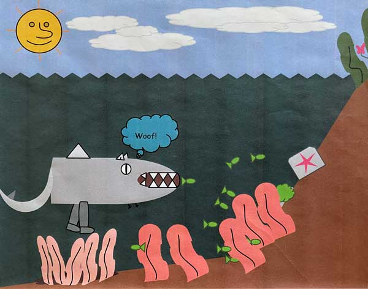

What are dharks?
Dog sharks (selachimorpha canis), often called dharks, are a group of elasmobranch fish characterized by a cartilaginous skeleton, three gill slits on the sides of the head, and wimpy front legs that appear to serve no use. Due to their incredible mobility, dharks thrive in costal beaches and are found at depths of 5 metres. Since their discovery, they have been found all accross the pacific ocean and are commonly seen by tourists. These unique creatures are apex predators – organisms at the top of their underwater food chain.

Evolutionary history
Origin
It is estimated that dharks first appeared in the late 1980's after decades of evolution. The earliest evidences of which were found in 2015 by American biologists Dave Limbean and Mike Stephens, Ph.D., while on an investigatory trip to the Pacific island of Aitutaki. Their research indicates that the dhark originated from a shipwrecked pack of dogs lost at sea during the second world war. Based on probable scientific theory, hypothesized after extensive research by these scientists, it is believed that the dogs were unable to aquire food on the island and began to hunt in the shallow reefs. Over the next few years the dogs rapidly evolved to have gills and a rear fin on their tail.
From this common ancestor, three species of sharks emerged:
-
Dhark (selachimorpha canis)
-
The most common of the three, and the most docile
-
Laser Shark (selachimorpha laseri)
-
It's a shark with laser beams
-
Flying Shark (selachimorpha tornadis)
-
The flying shark shown in the documentary Sharknado
Anatomy
The dark has five unique characterists:
-
Instead of a back fin like most sharks, the selachimorpha canis has a fin on its tail. This evolutionary advantage allows the dhark to travel at speeds of 80 miles an hour!
-
They have wimpy front legs. It appears that the rear legs stayed large while the front legs shrunk during evolution.
-
Their ears:
-
Dhark ears protrude from the head, unlike most sharks.
-
The ears also still have fur, which is different from the rest of the body.
-
They think in dog. Recent evidence shows that dharks still think in barks and woofs. They also love to play fetch.
-
Dharks are much less likely to rip you from limb to limb than other breeds of sharks.